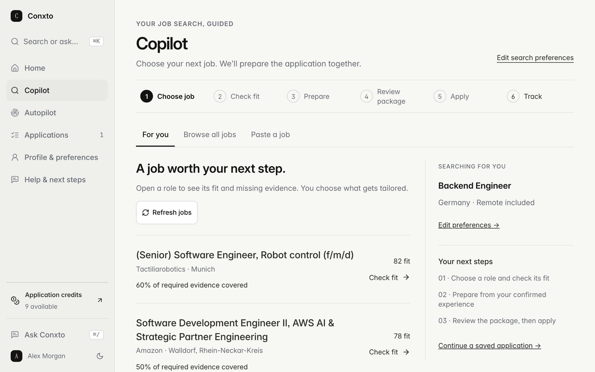
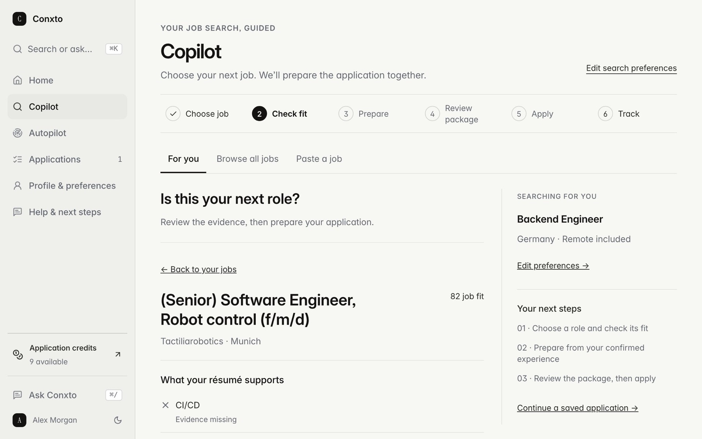
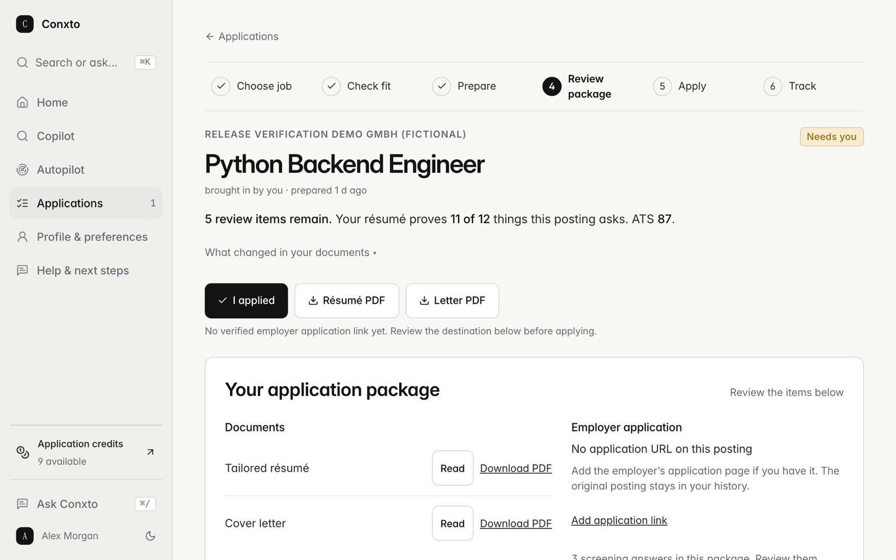

Conxto reads live job postings against your résumé, checks every requirement line by line, and prepares the whole application: a tailored résumé, a cover letter, screening answers and a draft email. A truthfulness pipeline reverts any rewritten line that claims more than the original résumé proves, and five specialist agents share one persistent memory per account. It is live with two paid plans: Copilot, where the person sends, and Autopilot, which applies inside rules the person sets.
The problem
Job seekers apply blind: they cannot see which requirements they actually meet, and tailoring every application by hand does not scale. Letting a language model rewrite a résumé removes the effort but adds a risk, because it can add claims the person never made. And a tool that sends applications for you takes over a decision that belongs to you.
- Nothing in an application may claim more than the résumé shows or the person has confirmed.
- A résumé is personal data. The database sits on an EU server, and some model providers only ever see text with the name and contact details removed.
- Employer forms ask for facts only the person knows, such as work authorisation, salary or start date. The system has to ask once and remember, never guess.
- One person runs it on one rented server shared with other products, so scoring, posting checks and PDF rendering must fit a small CPU and memory budget.
How it works
Read the résumé
The résumé is parsed into structured facts; facts it cannot show, such as work authorisation or salary, are asked once and stored as confirmed.
Find and rank postings
The job engine keeps one live record per job and searches that pool for the person's roles and places.
Check every requirement
Each requirement is matched to the résumé line that proves it, and the fit score is capped by the share proven.
Prepare the application
Résumé lines are rewritten one at a time and reverted if they claim more; the letter is built from evidence, and a review crew can hold anything false.
Send or hand over
In Copilot the person reviews and sends. In Autopilot the application goes out only if it clears the person's rules, and otherwise waits under 'Needs you'.
Track and remember
Each application's stage and outcome is recorded in the tracker, and the agents read the same memory on the next run.
What I built
Job engine
Collects postings from boards, feeds and company career pages, merges duplicates into one record per job, and marks a posting live or dead from evidence. Each person is matched by searching the pool for their roles and places, not by scoring a recency slice.
Requirement-by-requirement fit check
Maps each requirement in a posting to the résumé line that proves it (met, partial, missing or unclear), and caps the fit score by how much is proven. The same table drives the verdict on each role: exclude, ask, skip or review.
Truthfulness pipeline
Rewrites one bullet at a time and reverts any line that adds a new entity or number the résumé does not support. Letters are written sentence by sentence from evidence, and an independent review step can veto a false statement.
Specialist agents on one memory
Five specialist agents (strategist, identity, market, application, operations) and two reviewer roles work from the same per-account memory. A validator corrects any reply that claims a send, a queued task or an account change without a matching receipt.
Copilot and Autopilot
Copilot prepares each application and the person sends it. Autopilot applies inside versioned rules the person writes (roles, places, minimum fit, minimum proof, a daily limit), and hands the application to the person when a form needs an answer, a login or a fact it does not have.
Proof, with dates
Ran the truthfulness pipeline with the real model on two cases: a posting far from my résumé and a close match.
Far match: the model tried to open the summary with a title I have never held, it was reverted, and the letter fell back to an honest template. Close match: 13 lines considered, 1 changed, 0 reverted, ATS 39 to 41. The 77 build-time assertions (22 more added in tuning) pass. Recorded verdict: truthful and traceable, but timid.
Capped the fit score by the share of the posting the résumé proves, then re-measured on the same local test deck.
Roles scoring 80 or more with at most two proven requirements fell from 53 to 1. Side effect: roles clearing Autopilot's proof bar fell from 11 to 2 of 421, because the bar had been set on the inflated scale and had to be re-set.
Benchmarked the fit score against a public labelled résumé–posting set (1,759 test pairs). The labels are weak, so this shows ordering, not accuracy.
AUC, good fit versus no fit: Conxto's score 0.450 (below chance), keyword coverage 0.444, TF-IDF cosine 0.582, a small embedding model 0.661. The blended score I shipped that day (meaning 60%, requirements 40%) reached 0.644: better than chance, still modest.
Audit of the job engine's sourcing, liveness and matching, then a speed benchmark of the signed-in app on production (real Chromium, 4× CPU throttle, median of 3).
Collection was fine; selection was the problem. About 324,000 postings under 30 days old, across five sources, had been expired only because no search had re-seen them within a few days, and people were matched against a recency slice instead of a search. After switching to liveness by evidence and per-person full-text search, my search query fell from 9.5 s to 104 ms and the live pool rose from 20,986 to 110,457 by midday (the gain is postings the old rule had expired and the new rule revived). Cold start fell from 10.6 s to 2.7 s; a first visit after the cache expires still took about 10.8 s.
Real sends to employer application forms, recorded by what could be proven.
2026-10-14: a real send ended unverified because the employer page showed a challenge after the click, so it counts as not sent. 2026-10-17: the first confirmed Autopilot submission, my own application on an applicant-tracking form; the employer page showed its success message. The verifier missed it at first, so I confirmed it from the screenshot and then extended the verifier. Enterprise career portals still hand off to the person.
In numbers
- specialist agents plus reviewer roles on one shared memory per account14 Oct 2026
- 5 + 2
- posting rows collected by the job engine, live and expired15 Oct 2026
- 1,061,623
- cold start of the signed-in app on production after the speed pass (median of 3, 4× CPU throttle)15 Oct 2026
- 10.6 s → 2.7 s
- AUC of the shipped fit score on 1,759 labelled résumé–posting test pairs (weak labels: ordering, not accuracy)25 Sep 2026
- 0.644
Decisions
Revert unsupported lines one by one instead of refusing the whole rewrite.
On 2026-09-07 I ran the real model on a posting far from my own résumé. It invented four titles and areas of work. The integrity guard caught them and discarded the entire rewrite, so nothing false shipped, but nothing useful did either. Checking one bullet at a time keeps the true edits and sends only the false ones back.
Trade-off: The writer is cautious. On a close match it changed 1 of 13 lines and reverted none (ATS 39 to 41), so the visible gain is small. I chose a small true gain over a large unproven one.
The person stays in charge of every send; Autopilot works inside written rules.
An application is the person's own statement to an employer. Copilot prepares it and the person sends it. Autopilot applies only to postings that clear the minimum fit and minimum proof the person set. It starts in review-before-send, needs an explicit confirmation to go automatic, holds the first three emails for an OK, and stops for salary questions, legal attestations and facts the person never confirmed.
Trade-off: Fewer applications leave than a bulk auto-apply tool would send, and more wait under 'Needs you'. By 2026-10-17 Autopilot had one employer-confirmed submission, and it was my own.
Count an application as sent only when the employer's page confirms it.
A real send on 2026-10-14 showed a verification challenge after the click. I recorded it as unverified, not sent, and made the API refuse a retry unless the person acknowledges the risk of a duplicate. A result counts as confirmed only on positive evidence, such as the employer's success message.
Trade-off: Reported numbers are lower and the person sees unresolved states. In return a counter that says 'sent' can be trusted. It also meant my first confirmed submission needed a manual check until the verifier learned the employer's success text.
Only the truth check may block an application.
The first version of the review crew held everything. On a dry run over three real applications none would have passed: reviewers approved 1, 0 and 1 of the three, and two were needed. One veto was over a capital letter, some reviewers worked from a clipped posting, and legitimate expansions of terms already on the résumé were rejected. I narrowed it. Identity can veto any claim the résumé does not prove. Critic holds only embarrassing errors such as the wrong company, placeholders or the wrong language. Recruiter advises and never blocks.
Trade-off: Some applications will go out that a stricter reviewer would have polished. I accept that over a reviewer nobody can satisfy, and keep the one check that must fail closed: does it claim anything false?
Look inside



Limits, honestly
- Not yet proven with outside users, so I make no claim about user numbers or hiring outcomes. The first employer-confirmed Autopilot submission was my own, on 17 Oct 2026.
- Tailoring quality is being re-measured after a fix on 27 Oct 2026. A review crew added on 17 Oct is there to catch invented skills; a labelled fabrication test of it is still to come.
- Autopilot's reach is narrow. It fills and submits some application-form types and email applications; enterprise career portals, logins and unanswered questions still hand off to the person. On 2026-10-14, 54% of live postings carried no seniority field, so fit is weakest there.